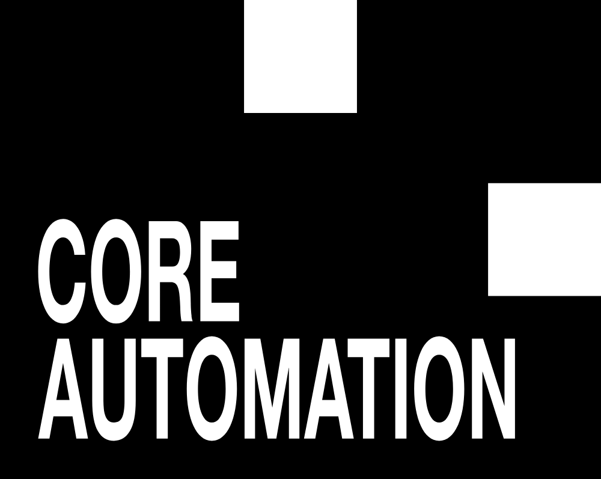

如今的推理模型通常通过生成更多token来扩展顺序计算。这效果出奇地好，但它迫使一些中间计算通过生成的token来承载，而非完全在模型的潜在状态内更新。这种限制会人为地串行化那些本可以在潜在表示内并行执行的计算。
替代架构可以随问题变难通过额外的潜在深度扩展计算。然而这些模型往往被证明难训练得多。
难点可能不在于更好的串行计算架构不存在。而可能在于我们当前的优化知识不成比例地偏向标准Transformer。我们正在发布One Layer Deeper：一个研究架构、目标和优化器能否共同设计（co-design）以学习更深串行计算、并在训练见过的推理深度之外有成效地外推的竞赛。
竞赛于2026年8月31日截止。
「模型，它们就想学」：Ilya Sutskever。
标准Transformer常常看似佐证这个观点，因为在足够规模下，它们在广泛任务上表现出总体稳定的优化动态。
对带循环潜在深度（recurrent latent depth）的架构远非如此。这些模型吸引人，因为它们可以在测试时通过加深度自适应扩展计算，但实践中它们往往不稳定、难优化，且跑得比训练见过的步数多时不可靠。
把难训练这些模型当作香草Transformer就是更好架构的证据，很诱人。然而Transformer也受益于多年积累的残差连接、归一化、初始化和优化器知识。带循环或自适应潜在深度的模型可能需要同样程度的架构与优化共同设计，其效用才会（更）清晰。
为调查这点，我们发布One Layer Deeper：一个端到端学习潜在串行计算的竞赛。目标说起来简单做起来极难：训练一个能做深层串行工作、还能在测试时有效使用比训练时更多计算深度的模型。
有些问题天生易并行，其他则涉及一串依赖、每步只能在前一步结果已知后开始。问题的计算深度是解决它所需的最小顺序依赖步数，这与执行的总工作量明显不同。
神经模型因此可以用不同方式花计算。更宽网络可并行做更多工作，更深网络可顺序组合更多变换。关键地，深度解锁的算力比宽度难获得得多。Merrill和Sabharwal证明：深度随输入长度对数增长的Transformer能解决固定深度Transformer无法无超多项式宽度均匀解决的任务。
要获得深度的表达力，问题不只是模型是否执行足够操作，而是那些操作是否按问题难度排进正确数量和编排的顺序步。
标准Transformer前向有固定深度，信息在模型产生下一个token分布前穿过预定数量的层。

然而在chain-of-thought推理中，模型重复应用同一固定深度电路，生成的token和KV cache（快权重）把状态从一个前向带到下一个。CoT因此本身就是经token的循环计算形式，已被证明极其有效。它允许模型分解难题、通过生成更长trace花额外测试时计算。它也是非常通用的机制：用于传达最终答案的同一语言接口可用于存储和操作中间状态。
然而这个接口会强加人为的计算结构，因为中间值在能影响后续解码步前必须序列化成token。本可在潜在表示内并行发生的计算必须摊到一串自回归pass上。
替代是在前向中直接增加计算。Universal Transformers重复应用共享Transformer块到隐藏状态，利用Adaptive Computation Time允许跨位置分配不同计算量。Deep Equilibrium Models解学习变换的不动点，有效模拟无限深权值共享网络的固定点。Deep Thinking模型和更新的looped或depth-recurrent Transformers类似地在多次潜在迭代中复用层。
这些模型研究参数能否跨深度复用、测试时计算能否不增参数增加、潜在计算量能否适应输入难度。
Looped层不是唯一可能。循环状态更新、attractor式模型和其他形式的潜在计算可能提供不同权衡。重要区别不在Transformer与非Transformer，而在不同方式的结构化和分配计算。
证明架构能表示更深计算，不等于证明它能学习它或善用其深度。至少有三个独立问题。
第一个主要是表达力问题。Universal Transformers在合理假设下计算上通用，deep equilibrium架构原则上能表示比标准固定深度前向深得多的计算。复用同一变换也提供不增参数增加计算的自然方式。
更难的问题是梯度优化是否会发现有解。重复应用相同层产生高度相关的潜在更新，而学习动态中的小错误可跨多次迭代复合。隐藏状态可能爆炸、坍缩或收敛到无帮助的解。
给模型额外深度因此不保证它会善用那深度。即使模型在训练深度解决任务，跑更长可能失败，额外测试时计算有时会让模型预测更糟。自适应计算再加一难：模型必须不仅学执行什么计算，还要学每个问题以可泛化方式需要多少计算。
与训练方法多年精炼、规模巨大的香草Transformer不同，对在潜在状态内执行长计算序列的模型，参数化和优化的许多方面我们还不理解。
难点可能不是更好模型架构不存在，而是我们当前优化知识不成比例地偏向香草Transformer。
我们根本相信架构不能独立于优化研究。在许多潜在步上执行有用计算的模型可能需要不同优化器、损失、初始化或中间监督。在标准Transformer设置下训练不好的架构不一定差；它可能只是需要不同训练流程。
评估计算深度出奇地难。在长串行流程上训练模型不够：同一答案仍可能由浅得多算法算出。例如欧几里得算法沿一串依赖余数推进，但最大公约数也能并行检查候选除数找到。特别是，*串行算法不一定意味串行问题*。
有用的深度基准因此应满足四个属性（序列化依赖、无浅捷径、固定问题长度、难度可调），且带清晰的「难度旋钮」让人们在小规模上为想法去风险。
One Layer Deeper的公开任务让模型预测值重复平方模半素数后的结果。
从x出发，模型反复应用「平方模N」，预测T步后的最终值。等价于计算x^(2^T) mod N。
这个任务有刻意简单的结构。每次平方依赖前次平方产生的余数。不知道N的因数分解，最佳已知通用方法就是顺序执行这些模平方，增加T直接增加依赖链长度。
同时输入和输出都不需随T增长。x和最终余数都保持有界于N。我们因此可以在固定问题长度的同时增加所需串行计算。
只要用半素数模数，模型也难「作弊」，因为分解这类数困难，没有捷径解任务而不真做串行计算。
模型在小N和T上训练，然后在更大模数、更大计算深度和两者held-out组合上评估。隐藏的Hard任务测试方法能否迁移到公开重复平方任务假设之外的领域。
One Layer Deeper *不只是*架构竞赛。
参赛者可自由选择模型、优化器、学习率调度器和损失函数。我们想鼓励这些选择之间的共同设计，而非假设有前景的架构应在其他标准设置下成功训练。
我们想看到新想法！例如我们怀疑成功提交需要某种组合：有意的串行架构、让极深执行足够稳定以训练的新优化方法、执行自适应计算的新方式。
更广泛地，我们希望学到架构、目标、优化器的哪些组合让深串行计算可训练。
感谢Modal和Northflank，参赛者可以通过One Layer Deeper网站把想法提交到托管的H100。
训练限制为单一H100预算，模型限制500M参数。提交不得在运行时硬编码任务算法，或用旨在直接解基准的任务特定数据增强。这些约束意在把搜索聚焦在通过架构、优化和损失设计端到端学习计算上。
提交说明见onelayerdeeper.ai/submit，也可加入Discord讨论想法分享结果。
参考：https://blog.tilderesearch.com/blog/one-layer-deeper